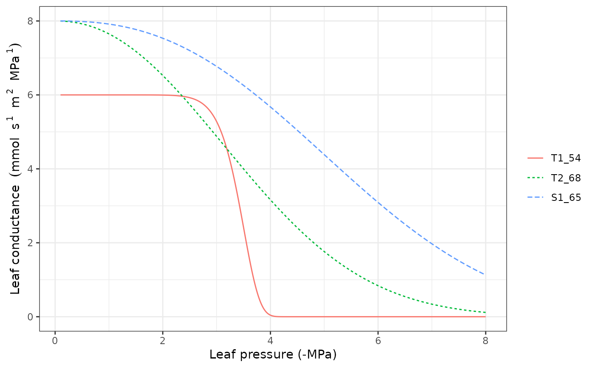
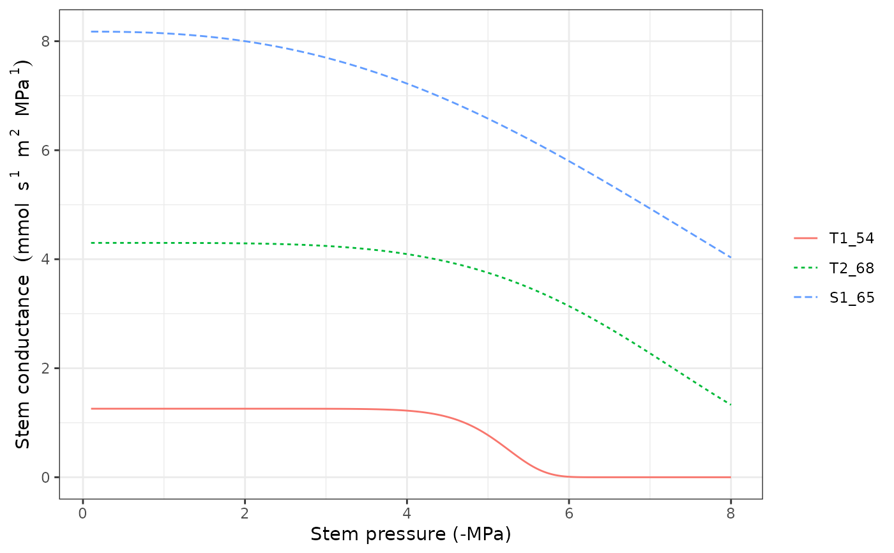

hydraulics_conductancefunctions.RdSet of functions used in the calculation of soil and plant hydraulic conductance.
hydraulics_psi2K(psi, Psi_extract, ws = 3.0) hydraulics_K2Psi(K, Psi_extract, ws = 3.0) hydraulics_averagePsi(psi, v, c, d) hydraulics_vulnerabilityCurvePlot(x, soil = NULL, type="leaf", psiVec = seq(-0.1, -8.0, by =-0.01), relative = FALSE, speciesNames = FALSE, draw = TRUE, ylim = NULL, xlab = NULL, ylab=NULL) hydraulics_psiCrit(c, d, pCrit = 0.001) hydraulics_vanGenuchtenConductance(psi, krhizomax, n, alpha) hydraulics_xylemConductance(psi, kxylemmax, c, d) hydraulics_xylemPsi(kxylem, kxylemmax, c, d) hydraulics_psi2Weibull(psi50, psi88)
| psi | A scalar (or a vector, depending on the function) with water potential (in MPa). |
|---|---|
| K | Whole-plant relative conductance (0-1). |
| Psi_extract | Soil water potential (in MPa) corresponding to 50% whole-plant relative conductance. |
| ws | Exponent of the whole-plant relative conductance Weibull function. |
| v | Proportion of fine roots within each soil layer. |
| krhizomax | Maximum rhizosphere hydraulic conductance (defined as flow per leaf surface unit and per pressure drop). |
| kxylemmax | Maximum xylem hydraulic conductance (defined as flow per leaf surface unit and per pressure drop). |
| c, d | Parameters of the Weibull function (generic xylem vulnerability curve). |
| n, alpha | Parameters of the Van Genuchten function (rhizosphere vulnerability curve). |
| kxylem | Xylem hydraulic conductance (defined as flow per surface unit and per pressure drop). |
| x | An object of class |
| soil | A list containing the description of the soil (see |
| type | Plot type for |
| psiVec | Vector of water potential values to evaluate for the vulnerability curve. |
| relative | A flag to relativize vulnerability curves to the [0-1] interval. |
| speciesNames | A flag to indicate the use of species names instead of cohort names in plots. |
| draw | A flag to indicate whether the vulnerability curve should be drawn or just returned. |
| ylim, xlab, ylab | Graphical parameters to override function defaults. |
| pCrit | Proportion of maximum conductance considered critical for hydraulic functioning. |
| psi50, psi88 | Water potentials (in MPa) corresponding to 50% and 88% of percent loss of conductance. |
Details of the hydraulic model are given in a vignette. Function hydraulics_vulnerabilityCurvePlot draws a plot of the vulnerability curves for the given soil object and network properties of each plant cohort in x.
Values returned for each function are:
hydraulics_psi2K: Whole-plant relative conductance (0-1).
hydraulics_K2Psi: Soil water potential (in MPa) corresponding to the given whole-plant relative conductance value (inverse of hydraulics_psi2K()).
hydraulics_averagePsi: The average water potential (in MPa) across soil layers.
hydraulics_vanGenuchtenConductance: Rhizosphere conductance corresponding to an input water potential (soil vulnerability curve).
hydraulics_xylemConductance: Xylem conductance (flow rate per pressure drop) corresponding to an input water potential (plant vulnerability curve).
hydraulics_xylemPsi: Xylem water potential (in MPa) corresponding to an input xylem conductance (flow rate per pressure drop).
hydraulics_psi2Weibull: Parameters of the Weibull vulnerability curve that goes through the supplied psi50 and psi88 values.
Sperry, J. S., F. R. Adler, G. S. Campbell, and J. P. Comstock. 1998. Limitation of plant water use by rhizosphere and xylem conductance: results from a model. Plant, Cell \& Environment 21:347–359.
Sperry, J. S., and D. M. Love. 2015. What plant hydraulics can tell us about responses to climate-change droughts. New Phytologist 207:14–27.
#Manual display of vulnerability curve kstemmax = 4 # in mmol·m-2·s-1·MPa-1 stemc = 3 stemd = -4 # in MPa psiVec = seq(-0.1, -7.0, by =-0.01) kstem = unlist(lapply(psiVec, hydraulics_xylemConductance, kstemmax, stemc, stemd)) plot(-psiVec, kstem, type="l",ylab="Xylem conductance (mmol·m-2·s-1·MPa-1)", xlab="Canopy pressure (-MPa)", lwd=1.5,ylim=c(0,kstemmax))#Load example dataset data(exampleforest) #Default species parameterization data(SpParamsMED) #Initialize soil with default soil params (2 layers) examplesoil = soil(defaultSoilParams(2)) #Initialize control parameters control = defaultControl() #Switch to 'Sperry' transpiration mode control$transpirationMode="Sperry" #Initialize input x = forest2spwbInput(exampleforest,examplesoil, SpParamsMED, control)#> Warning: Soil pedotransfer functions set to Van Genuchten ('VG').#Leaf vulnerability curves hydraulics_vulnerabilityCurvePlot(x, type="leaf")#Stem vulnerability curves hydraulics_vulnerabilityCurvePlot(x, type="stem")